Ontario Provincial Parks, Fall 2026
Summary
The Provincial Parks of Ontario were beautiful and,
despite the current affairs between the US and
Canada (tariffs, etc.), the Canadians we met were
wonderful; all were friendly and welcoming. To pick
a favorite among the parks would be difficult; they
were all so nice.
Border crossings were trivial. There were no
inspections of our vehicle or our camper. Going into
Canada, questions focused on firearms and coming
back into the states, we were asked if we had
"anything with bark on it". Having neither, we went
on our way in both directions.
En route to and from Ontario, we enjoyed our stays
in Michigan, much as we did on our 2024 trip. Of the
Michigan State Parks, Tahquamenon Falls remains our
favorite.
We monitored our consumptions of water, propane, and
12V electricity to refine our previous
determinations. To give this some context, we had
30A shore power for 27 of the 43 nights (44 days) we
were out and 15A shore power for 6 nights, which is
luxurious for us. (More commonly, we're off grid,
without connections.) We only had a city water
connection for 2 of our 43 nights. For hot water, we
ran the heater on propane for 10 to 15 minutes each
day and cooked with propane for 14 days. (We used an
electric hot plate for cooking when we had 30A shore
power.) We did not run the furnace at all; instead,
we used our ceramic heater when it got chilly. With
this, our daily consumptions were 6 gallons of
water, 8Ah of 12V electricity (provided by a 140Ah
LiFePO4 battery), and a little less than 0.5 lb of
propane. We typically consumed an additional 1 to 2
gallons of water from refilled water bottles per day
for coffee, drinking, and other cooking. It should
be noted that our battery was used for interior
lights (2 to 3 hours), radio and antenna booster (1
to 2 hours), bathroom fan (1 hour), water pump,
refrigerator electronics and sparker, hot water
heater electronics and sparker, thermostat,
CO/propane detector, and occasional use of slide
motors, tongue jack, and awning motor and that we
powered our television and recharged our devices
with a 300W Jackery. It should also be noted that we
only recharge our battery with our 100W suitcase
solar panels and a 20A lithium battery charger; we
leave leave the breaker for our converter off.
|
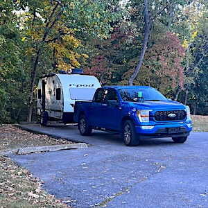 South Marcum (COE)
Campground, Rend Lake, Benton, IL
10/12-10/13/2026
Site 53
Connections: water and electricity; dump station
This was an overnight stop on our way home. Given
our midday departure from Saunemin, IL, the
relatively short 4-hour drive was appropriate.
South Marcum is a 6-hour drive from home for us and
makes for a good first or last stop for trips to the
west or Midwest. We've used it as such several times
now.
|
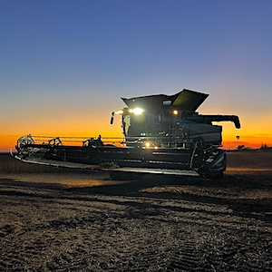 Saunemin,
Illinois
10/10-10/12/2026
Friend's driveway
We commonly visit good friends that farm in
Illinois. This time is was while they were
harvesting beans.
|
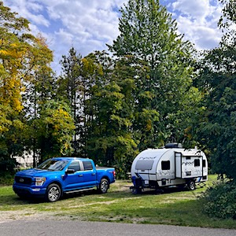 Lake Macatawa
Campground, Holland State Park, Holland, MI
10/06-10/10/2026
Site 147
Connections: 30A electric; water spigot near site;
dump station
At first, Holland was a bit of a disappointment,
mostly due to seasonal closures. Once at the
campground, we also regretted being in the Woodstock
loop; sites in the Pines loop are much nicer and the
bathhouse was recently rebuilt and is remarkably
nice. (We heard that a rebuild is scheduled for the
Woodstock loop bathhouse.) Despite our initial
impressions, we came to thoroughly enjoy Holland.
Our site (#147) was spacious and more private than
most in the Woodstock loop, though it was close to
Ottawa Beach Road.
From the campground, we walked to Black Lake
Boardwalk and Ottawa Beach, to the Reservoir Grill
for breakfast one morning, and climbed Mount Pisgah
(239 steps), which is a particularly tall, vegetated
sand dune with great views of the area.
We discovered that downtown Holland is very nice. A
stroll on 8th street included a visit to Kilwins for
ice cream. Heidi shopped at Field's Fabrics to
support her quilting projects. The Holland Museum
was well worth the visit, particular for its
displays of Dutch art. Any visit to the museum
should include a walk through Centennial Park, which
is beautiful, even at the time of our visit (no
tulips).
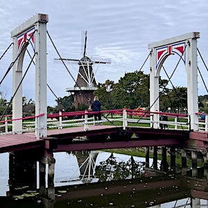 We really enjoyed Windmill
Island, particularly our tour of the windmill.
Deboer Bakkerij (bakery and restaurant) is deserving
of special mention. We went there for breakfast one
morning. Oma's Way omelet (asparagus, portabella
mushroom, sun-dried tomatoes, artichoke hearts, and
Boursin cheese) was the best! |
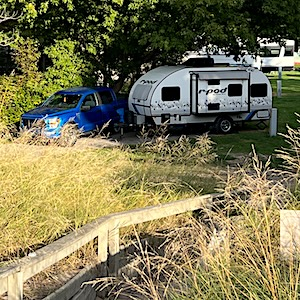 Petoskey State Park,
Petoskey, MI
10/02-10/06/2026
Site 165
Connections: 30A electric; water spigot near site;
dump station
Our site (#165) was at the end of the last loop in
the Tannery Creek Campground, directly across from a
short boardwalk to the beach. This loop of the
campground is less wooded than others and many of
the sites, including ours, provide 50A power.
Consequently, our little RPod was dwarfed by very
large RVs. Our site was smaller than most, barely
long enough to accommodate our truck and trailer,
and was on the inside of a tight curve at the end of
the loop. This made it a bit awkward to back in to.
We were also careful to provide plenty of room for
long rigs to make the turn. Regardless, it turned
out to be a nice site.
Our proximity to the beach was convenient for
hunting Petoskey Stones and for catching the
beautiful sunsets that occurred every evening. With
an onshore wind gusting to 35 mph, the surf was also
very impressive at times.
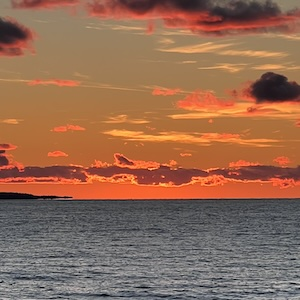 We enjoyed Petoskey, with
visits to Bayfront Park, to the downtown area during
an Octoberfest, hosted in part by Beards Brewery
(burgers and beers), and the Petoskey Brewing
Company (more burgers and beers). For some of the
essentials (groceries and laundry), we visited
D&W Fresh Market and the Bayview Laundromat. We
didn't make it to Kilwins (ice cream and fudge), at
least not in Petoskey.
From Petoskey, we drove to Charlevoix one morning.
We had hoped for breakfast at That French Place, but
found it closed. Instead, we went to Harwood Gold
Store & Cafe, which suited us well for a light
breakfast and a little gift shopping. |
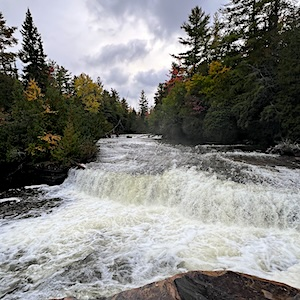 Rivermouth Pines
(Modern) Campground, Tahquamenon Falls State Park,
Paradise, MI
09/30-10/02/2026
Site 6
Connections: 30A electric; water spigot near site;
dump station
We love Tahquamenon Falls State Park and prefer to
camp in the rustic section of Rivermouth Pines,
without connections, as we did 09/04 to 09/09. For
this shorter stay (2 nights), our site (#6) was in
the modern section of the campground and provided
30A shore power. On a morning stroll into the rustic
section, we were reminded of how much nicer those
sites are.
We also regretted not staying longer, to enjoy more
paddling in the river. This campground is perfect
for paddling in the Tahquamenon River.
Instead of paddling, we hiked to the lower falls
(photo) and went back to the Brewery for lunch.
|
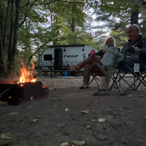 Grundy Lake Provincial
Park, Britt, Ontario
09/28-09/30/2026
Site 339
Connections: 30A electric (20A circuit w/15A cord);
water spigot near site; dump station
The campground at Grundy Lake was particularly quiet
and peaceful and campers were very friendly, easy to
talk to. Our site (#339) was spacious, but
circumstances of the site were like those at
Presqu'ile, which limited our shore power to 15A.
We didn't kayak, as we only had one full day.
Instead, we took in the near-peak foliage on a hike
to Pakeshkap (Pak) Lake. We also enjoyed the beaches
on Gurd Lake and Pak Lake.
There's quite a campaign to protect turtle nests
here. The nests are everywhere, in the dirt roads,
in campsites, and along trails. We reported one that
we found on our hike to Pak Lake; it had been
partially scavenged by animals.
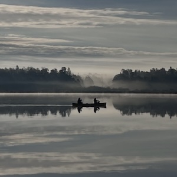 A funny thing happened
here. Folks at the R-Pod Rally (Presqu'ile) left us
with their surplus firewood, much more than we would
normally have, which we brought with us to Grundy
Lake. Then, while we were on our hike, someone left
us with a load of firewood and even stacked it
nicely by our fire pit. The humor comes in the fact
that (1) we seldom have a campfire, (2) at this
point, we had more than we could possibly burn, and
(3) we were crossing back into the US the next day
and we couldn't bring it with us. Indeed, we were
asked at the crossing if we "had anything with bark
on it"; we didn't; we had left our surplus firewood,
lots of it, at our campsite. |
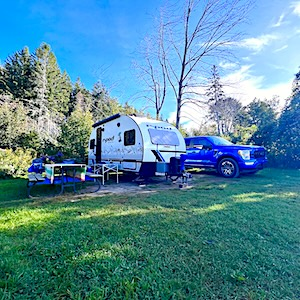 Presqu'ile
Provincial Park, Brighton, Ontario
09/24-09/28/2026
Site 58
Connections: 30A electric (20A circuit w/15A cord);
water spigot near site; dump station
Our campsite (#58) was on the inside of the loop
directly across from access to a small south-facing
beach with views of High Bluff Island and Gull
Island. Due to circumstances of the site, namely the
distance to a shared pedestal, which happened to be
on the door side of the trailer, we were forced to
use both our 15A and our 30A cords (50 feet total)
and to plug in to a 20A circuit. The circuit and
cords tolerated our 12A ceramic heater just fine.
The beach across from our site provided a perfect
spot for morning coffee, for Heidi to sit with a
book, and to watch 2 Mute Swans that hung around for
our entire stay.
The sunny (warm) side of the trailer and the truck
drew lots of Stable Flies, which were a bit of a
nuisance; their bites, even through clothing, are
painful.
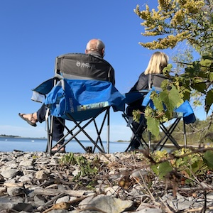 We had a great time meeting and
sharing stories with folks at the Ontario R-Pod
Rally. In fact, we hosted the group at our site both
Friday and Saturday nights, as ours was best suited.
The marsh boardwalk was exceptional. We also walked
to the lighthouse, where we learned about shipping
and rum-running on Lake Ontario.
Brighton, only several miles away, was a great town
for shopping, laundry, etc.
We also made a trip to the Big Apple for apple bread
and apple pie. |
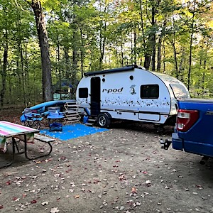 Canisbay Lake
Campground, Algonquin Provincial Park, South
Nipissing District, Ontario
09/19-09/24/2026
Site 106
Connections: 30A electric; water spigot near site;
dump station (remarkable 4-lane dump station)
Algonquin is a spectacular park and is a contender
for one of our favorites. It seems that we enjoyed
it while it was less crowded. We missed the summer
crowd and, although the foliage was near peak during
our visit, that crowd came the next weekend, as
reported on Facebook.
Our hikes included Spruce Bog, Beaver Pond, Two
Rivers, part of the Mizzy Lake trail, and the
Algonquin Logging Museum. Jon also hiked the Fork
Lake Trail, Whiskey Rapids, where he saw a beaver,
Hardwood Lookout, and Peck Lake.
The Visitor's Center is remarkable, with many
amazing displays and a very good video (theater). We
also enjoyed our visits to the Algonquin Art Center
and the Logging Museum.
Our campsite at Canisbay Lake was nice, but had no
sun, which we would have welcomed considering the
chilly conditions (highs in the 50's and lows in the
30's, F). It was also a bit far from the beach where
we put in our kayak, but we managed. Campsites in
the Canadian Provincial Parks we visited shared
electrical pedestals, placed half way between sites.
At this site, we set up as close to the pedestal as
possible and still barely reached it with our 25 ft
30A cord.
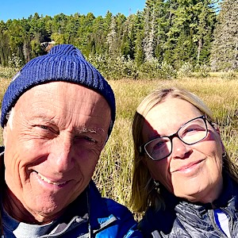
We paddled on Canisbay Lake twice, once to the far
end of the lake and once through the shallow marshy
waterway to the Cache Lake portage. From our kayak,
we checked out several of the paddle-in campsites,
some of which are very nice, and a beaver lodge near
the portage. We also paddled with an otter that
seemed curious about us.
|
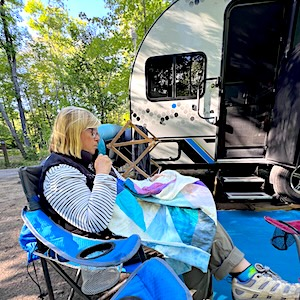 Lighthouse
B Campground, Killbear Provincial Park, Georgian
Bay, Lake Huron, Ontario
09/14-09/19/2026
Site 1433
Connections: 30A electric; water spigot near site;
dump station
Our pull-through site at Killbear, between two
campground roads, was nice. It was a short walk to
the bathhouse. As Heidi noted, the showers were
"amazing". The put-in for the kayak was also a short
walk down a campground road, an easy trek with the
kayak strapped onto the dolly.
After 10 days without, having shore power at
Killbear (and for the rest of our trip) was a
luxury. We used it for our ceramic heater and our
hot plate, and to recharge our lithium battery.
We paddled around Patterson Island, in Parry Sound,
where we were greeted by a juvenile bald eagle. We
had hoped to paddle in Blind Bay, but that part of
the campground was closed (seasonal closure), which
limited our access with the kayak.
We hiked to Lookout Point two times, once clockwise
and once counterclockwise. This is a great hike,
partially on boardwalks, to an overlook that
provides views of Blind Bay and Patterson Island. We
also hiked to Lighthouse point and adjacent beaches
from our campsite.
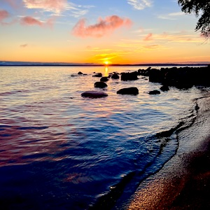
The town of Parry Sound served us well one day for
laundry, Timmy's (Tim Horton), pizza for lunch, gift
shopping, and getting our leaking tire plugged (Ford
dealership/service). It's a nice town, 30 minutes
from the park.
|
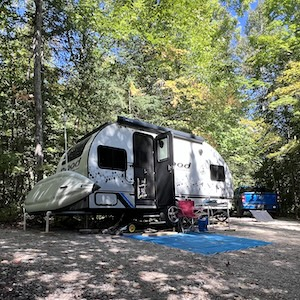 Mississagi Provincial
Park, 30 km North of Elliot Lake, Ontario
09/09-09/14/2026
Site 19
Connections: none; water spigot near site; dump
station
The 1-hour drive up to Mississagi from Huron Shores,
on ON rt. 546, was pretty barren. It's an unmarked
road (no lines), paved but rough, with very few
houses and even less traffic. We may have seen 2 or
3 cars the entire way. When we got to the
campground, on a Wednesday afternoon, we were
virtually the only ones there. Many seasonal sites
had trailers, tents, boats, etc. on them, but owners
were absent. There were no other regular campers.
With no guidance, it was difficult to find our site
and, when we did, we found it very challenging. It
was an awkward pull-through and very unlevel
(side-to-side), but we managed and it turned into a
wonderful stay.
A small beach on Semiwhite Lake, perfect for a
couple chairs, was accessed from our site down a
50-meter rocky trail. Sites 20-24 may have been more
convenient and a bit closer to the lake, but our
little beach couldn't be beat.
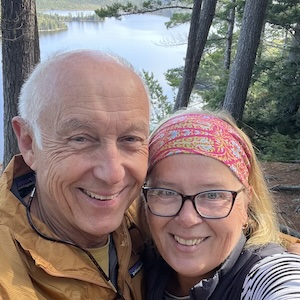 We thoroughly enjoyed a 7.5-km hike
to an overlook of Helenbar Lake, where we watched
groups of loons display territorial behavior with
their different calls and their wing rowing.
Despite a strong breeze we made two paddling trips
on Semiwhite Lake, which is completely undeveloped
other than the campground beach. Rather than contend
with getting the kayak down the trail from our
campsite, we chose to use our dolly for the first
time and put in at the campground beach. The dolly
worked well, but without a strap, it shifted a few
times under the kayak. (At Killbear, we used a
strap.)
We also made two trips to the town of Elliot Lake,
30 km south of the park, where we learned of its
mining history and came to enjoy Tim Hortons
(Timmy's/Timmies).
A few other campers joined us by the weekend.
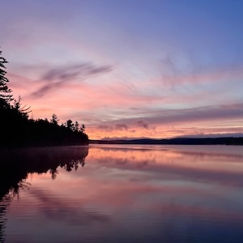 Sunrise on Semiwhite Lake
|
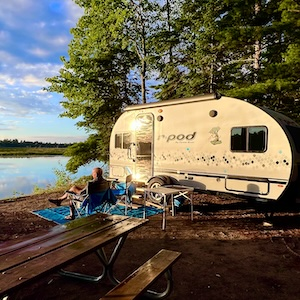 Rivermouth Pines
(Rustic) Campground, Tahquamenon Falls State Park,
Paradise, MI
09/04-09/09/2026
Sites 110 and 117
Connections: none; water spigot near site; dump
station
We love Tahquamenon Falls State Park and prefer to
camp in the rustic section of Rivermouth Pines.
There are no connections in the rustic section, but
the sites are pretty spectacular. We're also partial
to site 110, which we had a few years ago and for
the first few days of this stay. Site 117 was also
very nice and was even more convenient for launching
the kayak. It's a nice walk from the rustic sites,
along the river, to bathroom and shower facilities
in the modern section of the campground.
This place is perfect for kayaking. We kayaked both
upstream and downstream, to where the river empties
into Lake Superior. One evening, just before dark,
Jon noticed a red canoe drifting into the river from
the riverbank, just upstream from our site (117),
with no one on board. Earlier in the day, he noticed
it on the roof of a matching red Mazda SUV. He ran
up the road and found the car but no one was at the
site. He and another camper, Brian, commandeered one
of the park's kayaks and used our paddles to rescue
the canoe. The two of them were pretty proud of
themselves and had a great time saving the day.
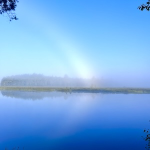 One morning, we woke up to
a fog bow. It's a thing. From Wikipedia: A fog bow,
sometimes called a white rainbow, is a phenomenon
similar to a rainbow ...
We relived some of our experiences from a few years
ago with a hike to upper falls and a beer (Tannin
Red) and burger at the brewery.
It was also here that we started using our
compressor to maintain air pressure in our front,
passenger-side tire, which was losing close to 1psi
per day. We looked for the leak with soapy water,
but couldn't find it. (The puncture was plugged in
Parry Sound, ON.)
|
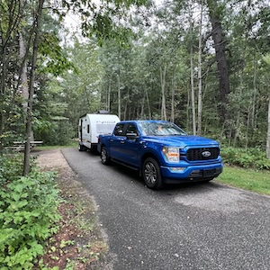 Hartwick Pines State
Park, Grayling, MI
09/02-09/04/2026
Site 21
Connections: 30A electric; water spigot near site;
dump station
We really enjoyed our first stay at Hartwick Pines.
We had a great site that was reasonably close to
very nice bathroom and shower facilities. A short
trail, leading from the campground, took us to 2
small ponds and made for a very pleasant hike. We
intended to hike the Old Forest trail from the
Visitor's Center but were rained out. Instead, we
enjoyed the Visitor's Center and the Logging Museum,
with its displays of logging equipment and
accommodations of the logging camps (bunkhouses,
kitchens, etc.) It's an interesting history.
Stopped at a Walmart at Gaylord, just north of
Hartwick Pines. Traffic at the exit and on roads to
and from Walmart was very heavy, perhaps due to the
holiday weekend. A Maverick station a few exits
further north was much easier to deal with for gas.
|
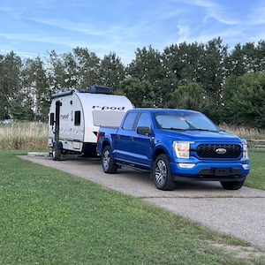 Sterling State Park,
Monroe, MI
09/01-09/02/2026
Site 18
Connections: 30A electric; water spigot near site;
dump station
Site 18 is a nice site. It's level and easy to set
up. Although its not shaded, a cool breeze off the
lake helped with the heat. Bathroom and shower
facilities are very nice and are easily accessed
along direct pathways. We really enjoyed the nature
trails and the beach, both of which are an easy walk
from the campground. Honestly, Sterling is a
beautiful park if you can overlook the nearby power
stations and the occasional odors.
We stayed here a few years ago, en route to the UP,
and had a similar favorable experience.
|
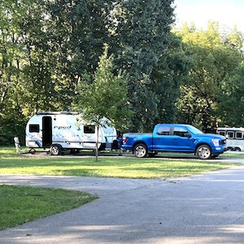 Kentucky
Horse Park, Lexington, KY
08/31-09/01/2026
Site 154
Connections: 30A electric and water; dump station
This site, on the outer loop, left a lot to be
desired. The paved drive was reasonably level and in
good condition, but the site otherwise had holes,
rocks, and muddy areas. Someone had put a bit of
mulch on one muddy spot, but it wasn't much help.
This site also lacked any mid-day shade, which just
made the heat that much worse. (Sites 148 to 152 are
partially shaded.) The central bath/shower building
serves the purpose, but needs work, and is a bit of
a walk from this site. You either have to walk the
long way around on campground roads or cut through
campsites, which we try to avoid. Although this
campground is in need of renovation, it worked well
for an overnight stop.
We were here a few years ago and spent a day in the
equestrian complex, including a horse show, and
really enjoyed it.
|
|